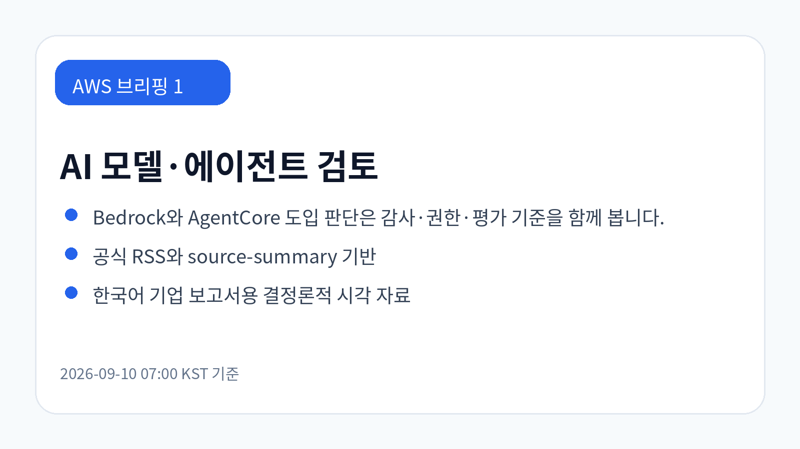
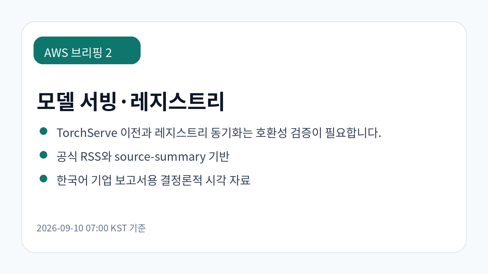
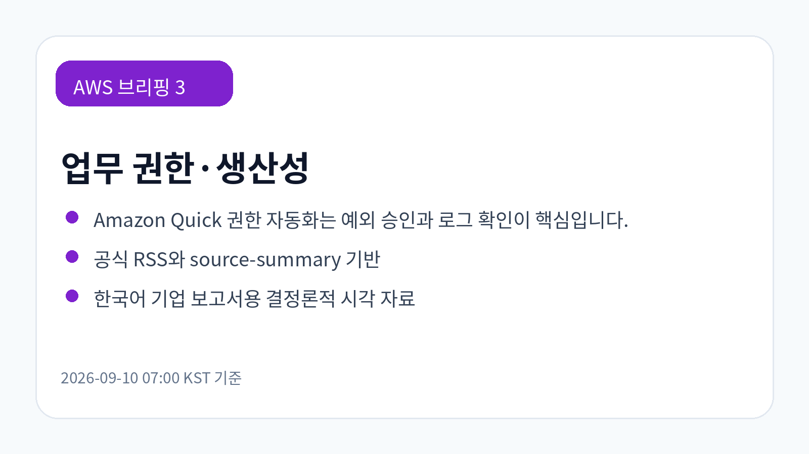

GPT-6 Astra의 Amazon Bedrock 제공과 엔터프라이즈 적용 검토
GPT-6 Astra가 Amazon Bedrock에서 제공되며 대규모 컨텍스트, 코딩·문서·분석 업무, Bedrock API 기반 호출과 감사 통제 검토 포인트가 함께 제시되었습니다.
원문 보기이번 실행에서 신규 저장·동기화된 AWS source-summary를 브리핑 입력으로 사용했습니다. 화면 표시는 한국어로 재구성했고, 제품명과 원문 URL은 공식 표기를 유지했습니다.
오늘 신규 확인된 글은 GPT-6 Astra의 Amazon Bedrock 제공, Amazon Bedrock AgentCore 기반 금융 워크벤치, Amazon Quick 권한 자동화, TorchServe 워크로드 지원, AI 빌더 업데이트로 구성됩니다. 공통 검토 축은 모델·에이전트 기능보다 권한, 감사, 호환성, 비용 영향의 확인입니다.
GPT-6 Astra가 Amazon Bedrock에서 제공되며 대규모 컨텍스트, 코딩·문서·분석 업무, Bedrock API 기반 호출과 감사 통제 검토 포인트가 함께 제시되었습니다.
원문 보기Heurist Finance가 Amazon Bedrock AgentCore로 투자 리서치 워크벤치를 구성한 사례입니다. 금융 데이터 활용 시 권한·감사·결과 검증과 투자 판단 책임 경계를 함께 설계해야 합니다.
원문 보기Ray Serve Deep Learning Containers를 활용해 TorchServe 워크로드를 단순화하고 지원하는 경로가 소개되었습니다. 기존 모델 서빙 자산의 이전은 성능·호환성·운영 절차를 함께 검증해야 합니다.
원문 보기Amazon Quick에서 사용자 단위 맞춤 권한을 자동화하는 방법이 제시되었습니다. 협업형 AI 업무 환경에서는 권한 매핑, 예외 승인, 감사 로그 확인이 핵심 검토 항목입니다.
원문 보기2026년 8월 AI 빌더를 위한 AWS 업데이트를 정리한 글입니다. 개별 기능의 즉시 도입보다 조직의 개발 표준, 보안 검토, 비용 영향 항목으로 분류하는 것이 필요합니다.
원문 보기


| 기사 | 게시 | 카테고리 |
|---|---|---|
| GPT-6 Astra의 Amazon Bedrock 제공과 엔터프라이즈 적용 검토 | 2026-09-09 | AI/ML |
| Heurist Finance의 Amazon Bedrock AgentCore 기반 AI 투자 워크벤치 구축 사례 | 2026-09-10 | AI/ML |
| Ray Serve Deep Learning Containers로 TorchServe 워크로드 지원 단순화 | 2026-09-10 | AI/ML |
| Amazon Quick의 사용자 단위 맞춤 권한 자동화 | 2026-09-10 | AI/ML |
| 2026년 8월 AI 빌더를 위한 AWS 주요 업데이트 모음 | 2026-09-10 | AI/ML |
Amazon Bedrock와 AgentCore 관련 글은 모델 선택, 도구 실행, 권한 통제, 평가 자동화를 함께 다뤄야 함을 보여줍니다. TorchServe와 Ray Serve 관련 글은 기존 모델 서빙 자산을 새 컨테이너 경로로 옮길 때 성능과 운영 절차 검증이 필요하다는 점을 시사합니다.
금융·고객 접점·업무 협업 환경에서는 데이터 경계, 사용자별 권한, 산출물 검증 책임이 중요합니다. 오늘 수집 근거만으로 비용 절감 규모나 국내 규제 적합성을 단정하기는 어려우므로 실제 적용 전 별도 확인이 필요합니다.